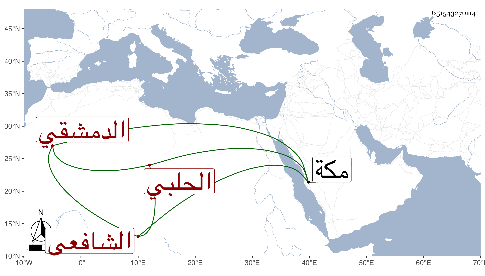

0902Sakhawi.DawLamic.ITO20230111-ara1.EIS1600.651543270114
Biography ID: 651543270114
165
أبو بكر بن عمر بن أبي بكر بن محمد بن عثمان التقي بن الزين الحلبي الأصل الدمشقي المولد الشافعي نزيل مكة تحول مع أبويه وهو مرضع إليها فقطنها ثم حفظ القرآن وغالب المنهاج والتمس مني أبوه قراءته للبخاري فقرأ من أوله إلى البيوع ومن الصيد والذبائح إلى آخره والنصف الثاني من مسلم مع مصنفي في ختمهما وجميع الشفا وسمع باقي الصحيحين وقطعة من الأذكار وغيره وهو ولد ساكن فارقته في سنة أربع وتسعين وقد أشرف على ختم المنهاج ولكن عقد له ليتزوج مع فقره وفقر أبويه ولم ينتج .
